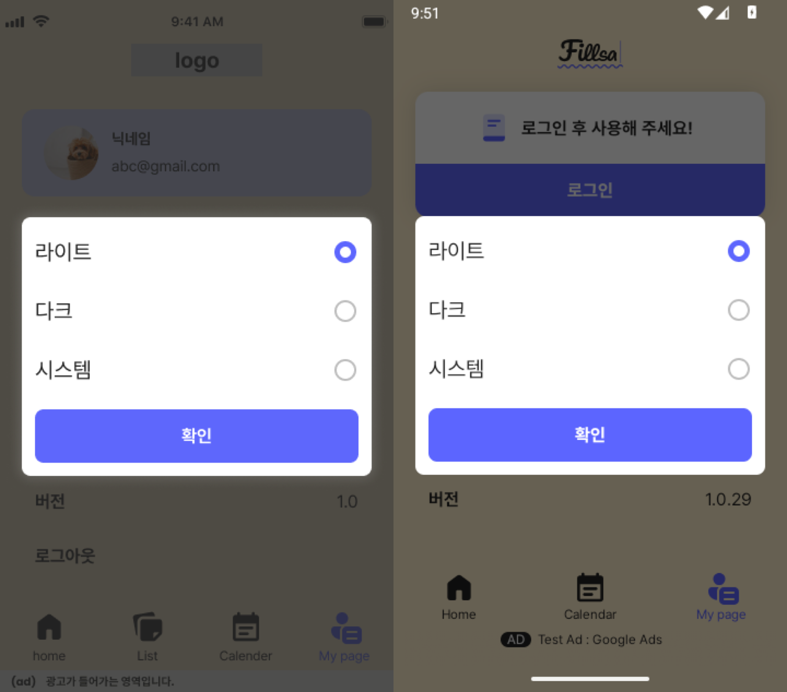
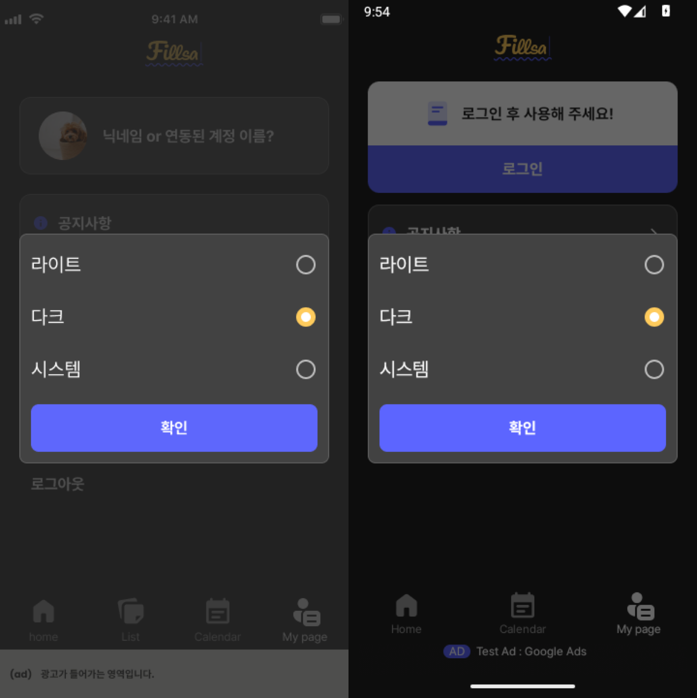
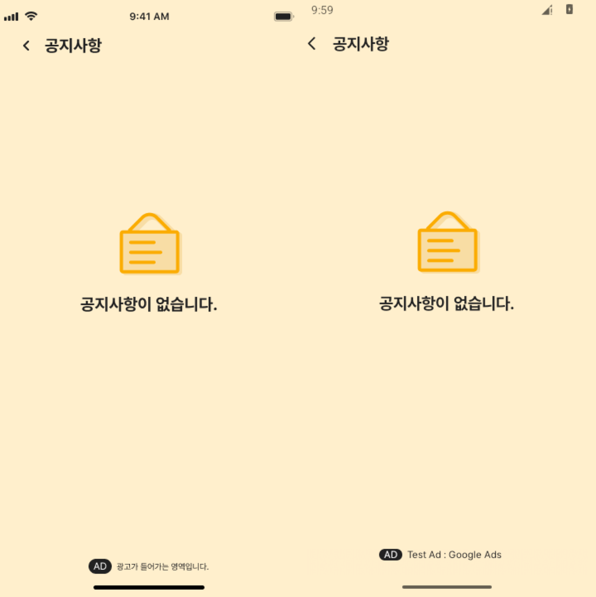
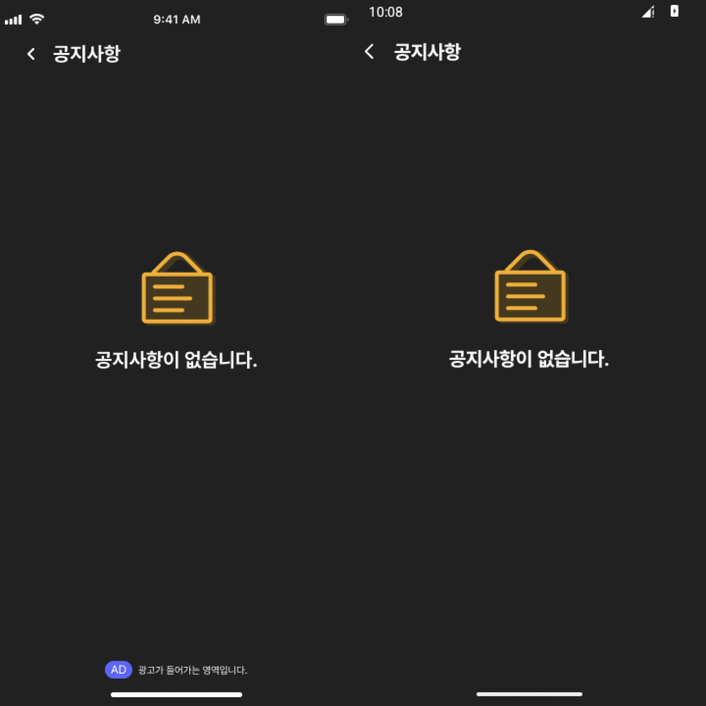

Implementation & verification plan
Android 미완료 QA 4건
수정·검증 계획
위젯은 범위에서 제외했습니다. 각 항목은 먼저 현재 빌드에서 재현하고, 확인된 차이의 소유 컴포넌트만 수정합니다. UI는 Figma 하위 Preview를 통과한 뒤 동일 조건의 전체 Android 화면으로 승인합니다.
현재 근거와 실행 순서
| 우선 | Notion QA | 현재 상태 | 이번 작업의 첫 판정 |
|---|---|---|---|
| P0 | 로그인 시간 만료 팝업 | Not started · 하루 뒤와 재설치 직후 반복 신고 | 설치 빌드와 복원 여부를 구분해 재현. 실패 경계가 확인되면 수정 |
| P1 | 테마 선택 팝업 크기조정 | In progress · 20sp/30dp, 라디오·테두리 반영; 전체 화면 미승인 | 현재 Figma와 Preview·전체 화면 재비교 |
| P1 | 공지사항 화면 광고 배경색상 수정 | In progress · 배경 표본 일치; 동적 공지·광고와 전체 화면 미승인 | 6개 상태와 광고 수신/미수신 분기 재비교 |
| P2 | 팝업 디자인 | In progress · 1.0.22(18) 스테이지 확인, 운영 확인 요청 | 대상 v3.0 디자인·팝업 유형·표시 경로 식별 후 운영 빌드 비교 |
android studio check는 READY Fillsa이며, 과거에 막혔던 ThemeItemLightPreview와 NoticeEmptyAdLightPreview가 2026-10-12 CLI에서 이미지와 semantics를 출력했습니다. 이 두 장은 렌더러 확인 증거이며 Figma 시각 통과 판정은 아닙니다.검토 집중 조건
| 조건 | 확인할 기대 결과 | 담당 단계 |
|---|---|---|
| 재설치 후 백업 복원 | 오래된 세션이 복원돼도 만료 안내가 반복되지 않음 | 로그인 A/B |
| 화면 STARTED 재진입 | 한 오류에서 로그아웃·이동이 한 번만 발생 | 로그인 A/B |
| 시스템 테마 전환 | 저장한 시스템 모드가 OS 라이트/다크 변경을 따름 | 테마 B |
| 광고 미수신 | 공지의 35dp 배경 영역과 빈 상태 위치가 유지됨 | 공지 A/B |
| 팝업 데이터는 있으나 미노출 | 서버·숨김 상태·주석 처리된 fetch 중 실제 실패 경계를 찾아 제품 의도대로 처리 | 팝업 A/B |
기존 증거: 10월 5일 HTML 보고서 · 현재 테마 Preview · 현재 공지 광고 Preview.


로그인 만료 반복
Not startedP0신고자는 하루 뒤와 앱 삭제·재설치 후에도 만료 팝업을 봤습니다. 취소 버튼 때문이라는 과거 추정은 재설치 사례를 설명하지 못합니다. 현재 코드에는 빈 refresh token 방어와 HTTP 401/403의 세션 삭제·로그인 이동이 있지만 운영 재현 증거가 없습니다. 기존 조사
원인 후보를 구분할 관측값
- 재설치 후 Android 백업이
settingsDataStore의 옛 토큰을 복원했는지 - 401 응답의 refresh 호출 횟수와 재시도 결과
HandleError의 STARTED 재진입 시 수집기가 중복되는지- 로그아웃 후 토큰·로그인 상태와 Back stack이 일치하는지
확인된 코드 경로
AuthAuthenticator → safeApi → TokenExpiredError → WithBaseErrorHandling → 로그인 이동. AndroidManifest.xml은 백업 허용이며 백업 규칙은 현재 기본 템플릿입니다. 이는 조사 우선순위이지 원인 확정이 아닙니다.
재현 데이터 고정
- 기기와 설치본 기록버전명·versionCode, Android 버전, 설치/업데이트 경로, 발생 시각과 마지막 로그인 시각을 기록합니다. 토큰 원문은 수집하지 않습니다.
- 네 경로를 분리해 실행① 새 설치·복원 없음 ② 삭제 후 재설치·백업 복원 가능 ③ 로그인 다음 날 access 만료/refresh 유효 ④ refresh도 만료. 각 경로의 HTTP 코드, refresh 횟수, 팝업 수, 최종 화면, Back 결과를 기록합니다.
- 재현 로그와 상태 대조하나의 오류에 표시/이동이 여러 번 일어나는지, 앱 재진입 시 이전 세션이 살아나는지 확인해 최초 실패 경계를 지정합니다.
조사 파일: app/src/main/AndroidManifest.xml, app/src/main/res/xml/data_extraction_rules.xml, app/src/main/res/xml/backup_rules.xml, data/src/main/java/com/arakene/data/util/AuthAuthenticator.kt, data/src/main/java/com/arakene/data/util/SafeApi.kt, presentation/src/main/java/com/arakene/presentation/util/ComposeExtension.kt, presentation/src/main/java/com/arakene/presentation/ui/common/WithBaseErrorHandling.kt.
실패 경계만 수정
- 회귀 테스트를 먼저 실패시킴
AuthAuthenticatorTest의 유효 refresh→원 요청 1회 재시도, refresh 실패→재시도 없음, 빈 토큰→refresh 없음과SessionExpirationTest의 로그인 목적지·Back stack, 수집기 STARTED 재진입의 단일 처리를 재현된 경계에 맞춰 테스트합니다. - 최소 변경 후 테스트백업 복원, 인증기 재시도, 오류 수집, 로그아웃 중 실제 실패 지점만 수정합니다. UI 문구·버튼을 바꿔야 한다면 로그인/만료 팝업의 정확한 Figma URL과 노드 ID를 화면 문서에 먼저 추가합니다.
- 원래 재현 조건 재실행단위 테스트뿐 아니라 동일 설치/복원·만료 경로를 서명된 후보 빌드에서 다시 확인합니다.
테스트 파일: data/src/test/java/com/arakene/data/util/AuthAuthenticatorTest.kt, presentation/src/test/java/com/arakene/presentation/util/SessionExpirationTest.kt. 검증 명령: ./gradlew :data:testDebugUnitTest :presentation:testDebugUnitTest :app:assembleDebug. 기존 테스트는 빈 refresh token과 로그인 목적지만 확인하므로 실제 반복 현상의 증거를 추가합니다.
테마 선택 팝업 크기조정
In progressP1Figma 전체 프레임은 라이트 2929:11178 · 360×634, 다크 2929:11694 · 360×720입니다. 팝업 노드는 2929:11237/2929:11768. 현재 코드에 20sp·30dp, 라이트 선택 라디오, 다크 테두리가 반영됐습니다. 남은 차이는 로그인된 배경 상태, 광고, dim, 시스템 영역입니다. 기존 QA
디자인과 Preview 기준 재확인
- Figma 최신 상태 확인라이트/다크 전체 프레임과 하위
ThemeItem·PositiveButton노드가 현재 링크와 같은지 확인하고docs/screens/5_3_theme.md를 갱신합니다. - 하위부터 CLI 렌더링
ThemeItemLightPreview,ThemeDialogLightPreview,ThemeDialogDarkPreview를 고정 크기·한국어·fontScale 1로 렌더링하고 이미지와 semantics를 저장합니다. 시스템 선택의 동작은 별도 확인합니다. - 실제 치수 비교팝업 x=20..339, 항목·버튼·라디오 자산, 20sp 글자, 30dp 간격, 테두리·dim을 Figma 크롭과 비교합니다. 차이가 난 컴포넌트만 수정하고 Preview를 재렌더링합니다.
주요 파일: presentation/src/main/java/com/arakene/presentation/ui/mypage/ThemeDialog.kt, presentation/src/main/java/com/arakene/presentation/ui/common/PositiveButton.kt, presentation/src/main/java/com/arakene/presentation/ui/mypage/MyPageView.kt. 팝업 dim 변경이 필요하면 테마 Dialog에만 적용합니다.
조립 화면과 동작 검증
- 동일 상태로 전체 캡처로그인된 My page, 라이트 360×634와 다크 360×720, 한국어·fontScale 1에서 Figma와 같은 선택 상태로 캡처합니다. 광고 수신/미수신과 Android 시스템 바를 별도로 기록합니다.
- 선택 저장 확인라이트·다크·시스템을 각각 선택→확인→앱 재진입하여 적용/저장 상태를 확인합니다. 시스템 모드는 OS 테마 변경을 따라가는지 확인합니다.
- 전체 프레임 대조팝업만이 아니라 로그인 배경, 광고, dim, 상태·제스처 영역을 나란히 비교합니다. Figma와 다른 동적 광고·OS 표면은 항목별 수용 근거 또는 별도 사용자 예외 승인을 기록합니다.
docs/design-qa/에 남긴 뒤 Notion Completed.



공지사항 광고 배경색상
In progressP1Figma는 라이트 목록 2929:11354 · 상세 2929:11389 · 빈 상태 2929:11409, 다크 목록 2929:11529 · 상세 2929:11568 · 빈 상태 2929:11588의 6개 전체 프레임입니다. 기존 런타임에서 배경 색상 표본과 빈 상태 위치는 맞았지만 실제 공지/광고 내용이 달라 최종 승인은 보류됐습니다. 기존 QA
6개 화면의 하위 상태 고정
- 프레임·데이터 매핑목록/상세/빈 상태 × 라이트/다크의 기준 PNG를
docs/screens/5_1_notice.md와 대조합니다. Figma 예시 제목·본문·날짜를 시각 fixture로 분리하고 실제 API 데이터는 기능 검증에 사용합니다. - 광고 영역 Preview 확장현재 성공한 빈 상태 광고 Preview부터 시작해 목록·상세의 라이트/다크 배경을 실제
SingleLineAdSurface로 렌더링합니다.EmptyNoticeSection,NoticeItem, 상세 본문도 영향 범위대로 확인합니다. - 광고 수신/미수신 분기 확인각 상태에서 35dp 광고 띠가 유지되는지, 색상 분기가 공지 외 화면에 새어 나가지 않는지 확인합니다. 로딩 중
itemCount == 0가 빈 상태로 보이는 구간도 재현해 Figma에 없는 상태를 임의로 추가하지 않습니다.
주요 파일: presentation/src/main/java/com/arakene/presentation/ui/common/SingleLineAdSection.kt, presentation/src/main/java/com/arakene/presentation/ui/mypage/NoticeView.kt, presentation/src/main/java/com/arakene/presentation/ui/mypage/NoticeListSection.kt, presentation/src/main/java/com/arakene/presentation/ui/mypage/NoticeDetailView.kt, presentation/src/main/java/com/arakene/presentation/ui/mypage/EmptyNoticeSection.kt.
전체 화면과 회귀 검증
- 360×720 전체 캡처 6종API 35·160dpi·한국어·fontScale 1에서 목록→상세 이동과 빈 상태를 라이트/다크로 캡처합니다. 시각 fixture를 쓴 화면과 실제 공지/광고 화면을 구분해 저장합니다.
- 영역별 비교본문 배경, 광고 띠 y=665..700, 헤더, 빈 상태 아이콘·문구, 시스템 바와 제스처 영역까지 나란히 비교합니다. 동적 광고 문구를 Figma placeholder와 동일하다고 기록하지 않습니다.
- 필요한 수정만 적용차이가 입증된 분기만 변경하고, 모든 공지 상태와 공지 외 공유 광고 영역을 재확인합니다. Preview→전체 화면 순서로 최대 5차까지 다시 대조합니다.




팝업 디자인 운영 확인
In progressP2Notion 댓글은 1.0.22(18) 스테이지 확인 후 운영 배포까지 확인을 요청합니다. Figma QA 섹션 2554:2201은 비교 사진 영역으로, 구현 기준인 v3.0 팝업 프레임으로 확정되지 않았습니다. 앱에는 일반 공지·이벤트·버전 업데이트 팝업 경로가 있으나 현재 MainActivity.kt의 getPopupGeneral() 호출은 주석 처리돼 있습니다. 제품 의도와 노출 경로를 먼저 확인해야 합니다. 기존 계획
대상 팝업 식별
- 기준 디자인 확보v3.0 팝업의 정확한 Figma 파일 URL·프레임/노드 ID, 라이트/다크와 열림/닫힘 상태, 버튼·문구를 지정합니다. 해당 화면 문서와 전체 프레임 PNG를 준비합니다.
- 표시 경로 확인Notion QA 사진이
VERSION_UPDATE,NOTICE,EVENT중 어느 타입인지, 서버 응답/진입 화면/노출 조건을 식별합니다. 주석 처리된 fetch가 의도된 중단인지도 확인합니다. - 운영 기준 기록운영에 실제 설치된 versionCode/versionName, 팝업 데이터와 노출 시각, 재현 기기 조건을 기록합니다. 스테이지 확인 기록으로 운영 확인을 대신하지 않습니다.
조사 파일: presentation/src/main/java/com/arakene/presentation/MainActivity.kt, presentation/src/main/java/com/arakene/presentation/viewmodel/MainActivityViewModel.kt, presentation/src/main/java/com/arakene/presentation/ui/common/GeneralDialogs.kt, presentation/src/main/java/com/arakene/presentation/ui/common/ImageOnlyDialog.kt, presentation/src/main/java/com/arakene/presentation/ui/common/MainNoticeUpDialog.kt.
운영 대조 후 분기
- 팝업이 정상 노출되면대상 하위 Preview와 운영 전체 화면을 Figma와 비교하고 닫기·오늘 그만 보기·다음 팝업 등 디자인에 정의된 동작을 확인합니다. 일치하면 수정 없이 증거만 남깁니다.
- 팝업이 노출되지 않으면서버 데이터, 주석 처리된 fetch, 숨김 저장 상태를 순서대로 조사합니다. 제품이 노출을 요구하는 것으로 확인됐을 때만 실패 테스트를 만들고 경로를 수정합니다.
- 시각 차이가 있으면확정된 Figma 노드에 대응하는 팝업 컴포넌트만 수정하고 CLI Preview→전체 운영 프레임 순서로 재검증합니다.
Completed.사용자에게 필요한 자료와 결정
다음 입력은 구현자가 코드나 기존 디자인만 보고 확정할 수 없습니다. 가능한 항목부터 받으면 해당 작업을 독립적으로 진행할 수 있습니다.
| 항목 | 필요한 것 | 받으면 가능한 작업 |
|---|---|---|
| 로그인 반복 | 재현 기기/앱 버전/발생 시각/재설치·백업 복원 여부, 테스트 계정과 만료 재현 방법. 비밀번호·토큰 원문은 보고서에 기입하지 않음 | 실제 실패 경계 확정, 수정 및 동일 조건 재검증 |
| 테마 | QA의 “약 2dp 축소” 요청과 현재 Figma 20px 중 최종 기준. 축소가 최종이면 수정된 Figma 프레임 | 문구·크기 수용 기준 확정 |
| 공지 | 동적 공지/광고 문구를 고정 fixture와 실제 데이터로 각각 검증하는 방식 승인, 또는 현재 콘텐츠를 그대로 대조할 별도 디자인 프레임 | 6개 전체 프레임을 판정 가능한 동일 상태로 구성 |
| 팝업 디자인 | v3.0 대상 Figma 프레임/노드 ID, 팝업 유형과 표시 경로, 운영에서 확인할 빌드/서버 데이터 | 구현 필요 여부·운영 수용 판정 |
최종 검증과 완료 처리
엔지니어링 게이트
- 기존 필사 미커밋 변경과 이번 4건을 구분한 작업 기준을 만들고 대상 커밋을 고정합니다.
- 영향받은 하위 Preview를 CLI 이미지·semantics로 저장하고 Figma와 비교합니다.
- 같은 기기/테마/언어/상태의 전체 프레임을 Figma와 나란히 비교합니다. 각 UI 항목 최대 5차 검증 규칙을 지킵니다.
./gradlew :data:testDebugUnitTest :presentation:testDebugUnitTest :app:assembleDebug와./gradlew :app:assembleRelease -x :app:uploadCrashlyticsMappingFileRelease, 릴리스 서명 검증을 수행합니다.- 서명된 배포 후보에서 로그인·테마·공지·팝업을 실제 조건으로 다시 실행합니다.
Notion과 배포 게이트
- 항목별 QA 기록에 Figma 노드, 기기/빌드, Preview, 전체 캡처, 차이·수정·결과를 남깁니다.
- 증거가 완성된 건만
Completed로 옮기고 Notion을 재조회합니다. 자료가 없거나 차이가 남은 건은 진행 중으로 유지합니다. - 신규 배포본의
versionCode가 Play Console의 사용 이력보다 큰지 확인하고 AAB를 생성합니다. - 내부 테스트에서 동일 AAB를 확인한 뒤 운영 업로드/게시를 별도 승인 단계로 진행합니다.